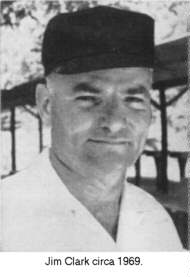
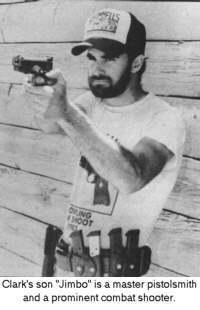
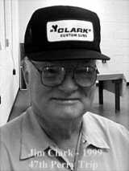

JIM CLARK shot NRA Bullseye Pistol
competition for twenty-eight years, finally retiring from
competition in 1975. Clark won the National Pistol Championship
in 1958 and is the only civilian ever to accomplish this feat. He
won the National civilian title five times. He was the fifth man
in the U.S. to break 2600 and the fourth to break 2650. But his
accomplishments don't end there. He has been fully active in the
pistolsmith business since 1950, well known as one of the true
innovators of pistol accurizing.
In 1985, the American Pistolsmiths Guild awarded Clark a trophy
proclaiming him American Pistolsmith of the Year. Bagging double
brass rings as the best pistol shooter in the country and its top
pistolsmith is a unique coup: accomplished by James Edwin Clark
and by no other known human being. I would say it serves as more
than adequate excuse to feel a bit chesty about things.
Mrs. Clark works in the office in the shipping-receiving
department and they have a son, Jim Clark, Jr., who' s also a
pistolsmith and shooter. The younger Clark racked up his first
listed win in 1971, his twenty-eighth in 1988. Give him time and
he may catch up with his sire, but that's a tough row for anyone
to hoe, though his genes should be helpful.
The story of Clark's early years constitutes one of those
triumphs over bleak adversity through sheer guts and
perseverence. He was born on the fifteenth of February in 1923,
down in Fort Worth, Texas. When he was 3 years old, his father
deserted his mother and her brood of three. She struggled to keep
the family intact as best she could, working as a seamstress.
After a time, she remarried and, from Jim's viewpoint, everything
didn't start coming up roses, as of that moment.
His stepfather wouldn't allow Jim to own or fire guns during the
lad's early years. The children had no toys other than what Jim
was able to construct and share with them. Put another way, when
the basic alloy is just right, adversity can serve as the
tempering agent that, somehow, produces an uncommonly remarkable
human being. Browning certainly was one example and Clark is
another. Does this mean we should set up homes for
over-privileged children and systematically mistreat the wee
nippers so they' 11 grow up to be the leaders and innovators of
generations to come? I hasten to note that I'm being facetious...
probably.
Despite being 8-1/2 months older than myself, Clark made a more
routine passage through the school system and graduated from high
school in 1942, rather than 1940. We both went into uniform in
'42, however.
Clark wanted to be a Navy pilot, but the swabbie docs thought
they spotted a trifling defect in the cartilage of his nose and
declined his offer. So he went around to palaver with recruiters
for the U. S. Marine Corps, all too innocently unmindful that
they "take" from the USN.
A glib-tongued Marine recruiter solemnly assured Clark that, if
he'd only sign the paper and hold up his right hand, he'd go off
to pilot training straight as a shot. So Clark signed up and they
zipped him off to training...as a rifleman.
Clark's family had moved to Shreveport, Louisiana, in 1939, about
the time he got into high school and his favorite course had been
mechanical drawing getting nothing but straight A's for that on
his report card. He'd also joined the ROTC and became the captain
of its rifle team. Thus, the USMC's arbitrary assignment wasn't
all that grotesque. All they really did was nail the feet of a
would-be birdman to terra ever-so firma.
Clark got through USMC boot camp and was assigned to Camp Elliot,
California, for scout/sniper training with the newly organized
4th Marine Division. Graduating with honors from that program,
Clark saw service at Roi-Namur and Saipan with the division.
Scout/ snipers serve as sort of the eyes and flashing fangs of
combat USMC groups; a spectacular but small band of specialists.
Most of Clark's duties were carried out well in advance of the
American lines.
He was issued a Springfield with a 10x Lyman target scope sight
and came to like the rifle, meanwhile feeling somewhat less
warmth toward the unwieldy and painfully vulnerable scope. During
the Saipan landing, he stashed the scope in his pack and later,
on unpacking it, discovered it had been demolished by a shell
fragment, even though he didn't have so much as a scratch.
He discarded the sightless Springfield in favor of a scavenged
M-l Garand and an M1911A1 pistol, dealing himself into the
surrounding fray. After a time, he acquired another Lyman-scoped
Springfield from a sniper who'd collected some punctures and was
being retired from cornbat, thus putting Clark solidly back into
business as a scout/sniper.
As Clark' s unit came up on the small village of Garapan, Clark
had lost three different spotters to enemy fire. All by himself
and unattended, he perched alone upon a cliff, a thousand yards
or so above a road leading out of the village.
The road below was all a-crawl with Jap troops engaged in a
frantic bugout. Clark managed to get his new scoped Springfield
sighted in for the generous distance and fired over three hundred
rounds, scoring nothing but hits after he'd "found the
range." It seems likely he accounted for more enemy soldiers
than he would had he gotten his original wish and won his wings.
Clark put in twenty-one days of combat before catching a rifle
bullet in the shoulder as he attempted to rescue a wounded
partner. He was sent to the hospital and his left arm was
paralyzed for six months. He spent the next year in various
stateside Naval hospitals before receiving a discharge in 1945.
Returning to Shreveport, Clark enrolled in college, majoring in
architecture and took a job after classes, working part time in a
local gun shop.

It was in 1947 that a friend invited
Clark to shoot in a pistol match. Using an as-issued GI Remington
Rand .45 auto and hardball military ammo, Clark chalked up a
seventy-eight percent at fifty yards on his first try.
Considerably intrigued, he borrowed the needed three guns --
a.22, a .38 Special and an accurized .45 auto -- to enter a
registered NRA match. He qualified as sharp shooter and made
expert in his second match, master in his third. Many pistol
shooters work for grim and dogged years to achieve master rank
and a lot of them never make it.
When Clark shot his first score over 2600 -- out of a possible
2700 - he did it with borrowed guns, except for the Colt Match
Target .22 he'd bought second-hand for $50. It was 1950 when
Clark broke 2600 and 1960 when he became the fourth man to top
2650.
With the outbreak of the Korean War, Clark was called back into
service in 1951 and spent considerable time at Camp Pendleton,
California, doing accuracy jobs on Marine competitors' .45
pistols. He encountered a .38 Super Colt that had been converted
to handle the .38 Special wadcutter and was thoroughly fascinated
by the prospects he saw in it.
Upon his discharge in late 1951, Clark went back to Shreveport
with a Sheldon lathe and milling attachment he'd purchased for
$600 from a Marine gunner. His friend Bill Gooch -- the same one
who had introduced him to pistol shooting in the first place --
Loaned him money and helped him set up a building.
Clark arranged a bank loan and bought twenty .38 Super Colts,
converting them to handle the .38 Special midrange wadcutter
cartridge. He ran an advertisement in the American Rifleman and
it drew a heavy response from interested would-be customers. The
Clark name quickly became known among pistol competitors and
there has been heavy demand for his products and services ever
since.
Despite the time and effort of maintaining a successful business,
Clark continued as an active competitor. Goaded by the heavy
traveling entailed in match shooting, Clark learned to fly and
bought an airplane, thus finally realizing a long-term ambition.

During the years as a match competitor,
Clark spent upward of $10,000 a year on match fees, travel
expenses and practice ammunition. There are some who do not need
a great deal of practice, but Clark admitted he is not one of
them.
His top place in the U.S. Open Pistol Championship in 1958 was a
singular achievement, as Clark was the first shooter to win that
event without being sponsored by a military or police group. He
footed all of the considerable expenses out of his personal
pocket and, yes, he feels it was worth it.
It was 1975 when Clark finally decided the game was no longer
worth the candle and retired from the competition circuits so he
could devote full time to running his shop. One of the house
specialties was a target conversion of the .22 LR Ruger auto
pistol to which he fitted a steel trigger of his own design, as
well as stocks and barrels. He has turned out close to 30,000
such guns, along with nearly a quartermillion .45 accuracy jobs
and .38 Special Colt conversions.
As time permitted, Clark made a number of experiments aimed at
improving performance of the .45 ACP Colt. Among the things he
discovered was that six inches probably represents the ideal
length for the barrel. He began using Douglas barrels that
incorporated an integral feed ramp of his own design. The novel
concept served two vital purposes: First, it cured a lot of the
feeding problems that stem from the juncture between the feed
ramp at the upper front of the magazine well and the relieved
area at the lower edge-of the chamber. Second, it supported the
case head and thus prevented the occasional problem from blown
case heads. Clark eventually manufactured such barrels entirely
in his own shop.

Another Clark innovation was the
long-slide conversion and that came about rather fortuitously.
Visiting a war surplus store in Arkansas, Clark came upon an
entire oil drum full of GI pistol slides that had been cut in two
by the government in the process of deactivating service pistols.
Clark bought the entire lot of destroyed slides for a dime apiece
and spent the next several years turning them into long slides.
With the supply finally exhausted, he had them made from scratch
by an outside vendor.
With the advent of bowling pin competition in the mid-Seventies,
Clark came upon another area of endeavor. He produced what
probably was the first auto pistol expressly designed for that
challenging event, As refined and finalized, the Clark pin gun
has a coned sleeve at the muzzle extending in front of the slide
and the same width. At the buyer's option, it can have
recoil-control vents or it can be plain, with a choice of 5-1/4,
5-3/4, or 6 inch barrel lengths. Several other helpful features
can be had such as a bevel around the base of the magazine well,
stippled front strap, low-mounted sights by Millett, Bo-Mar or
others, extended ejector and a lowered ejection port,
Jim Clark was also an enthusiastic hunter and has taken dozens of
deer, using an iron-sighted Model 29 Smith & Wesson with an
8-3/4 inch barrel, along with a great many smaller game species
bagged with assorted other handguns.
To read more about Jim Clark and the company he founded, Clark
Custom Guns, visit their website at www.clarkcustomguns.com.
Up until the day he died, Jim and company faithfully made the
trip to Camp Perry every year.